A wearable Arduino device built as part of a graduate research assistantship, designed to translate foot motion into game inputs for Unity-based stroke rehabilitation exercises.
The hardware went through three physical iterations, starting from hand-drawn sketches and 3D design mockups.
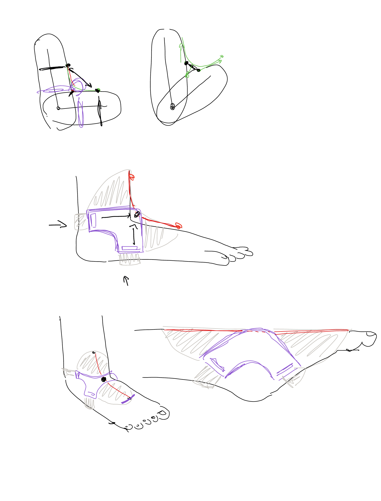
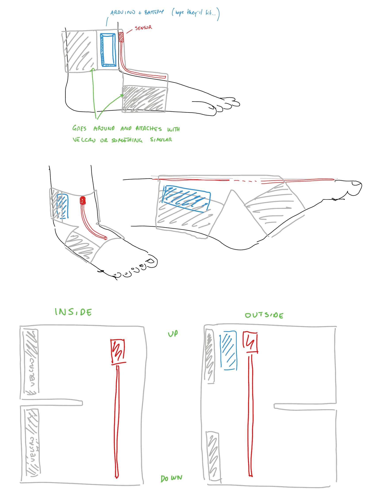
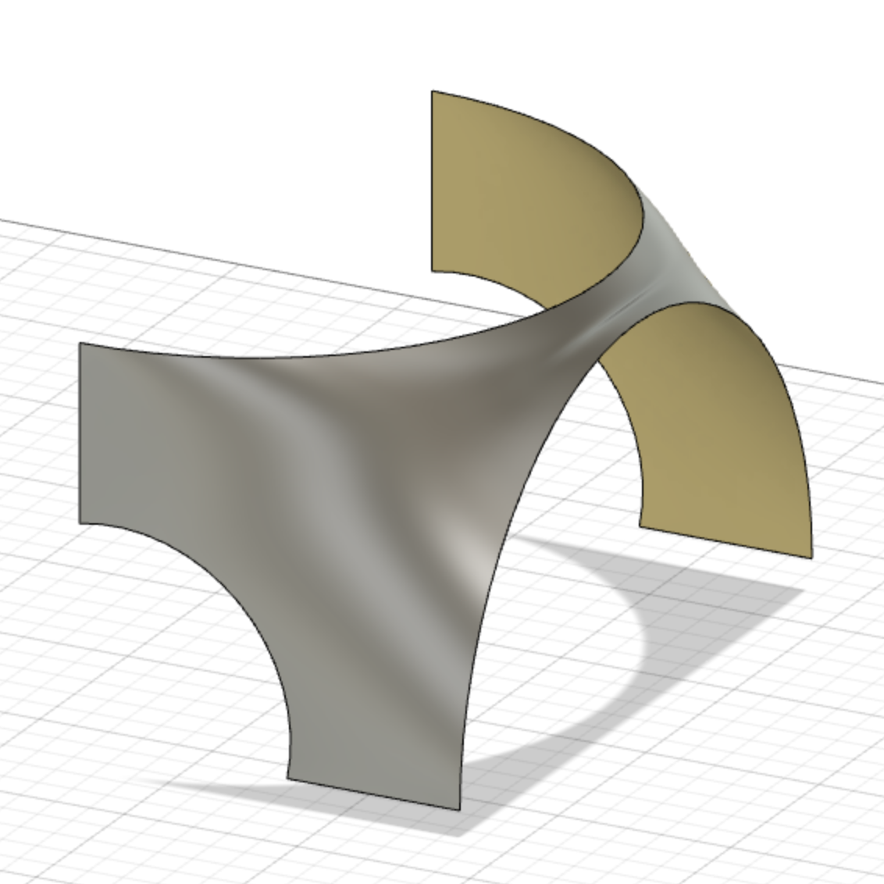
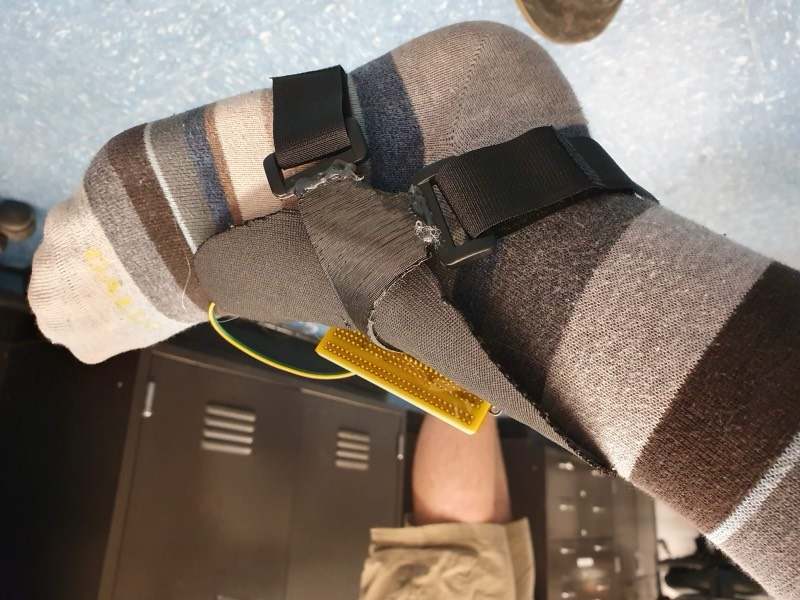
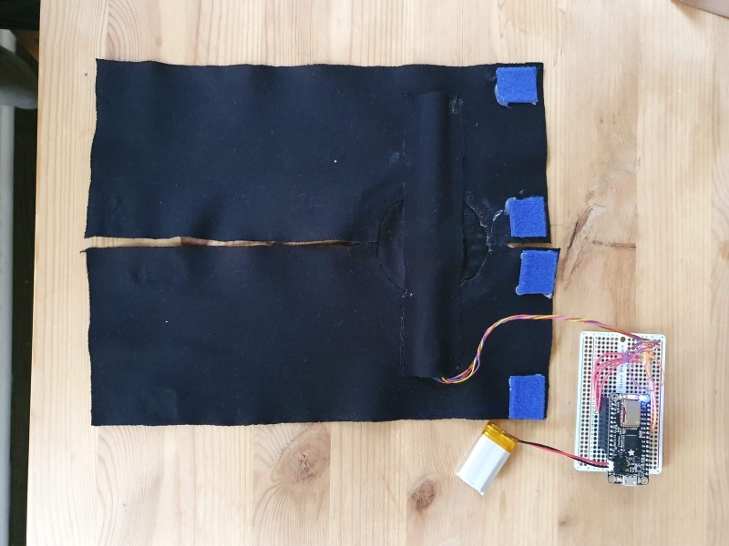
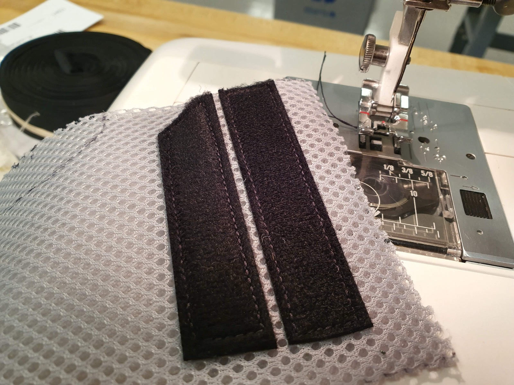
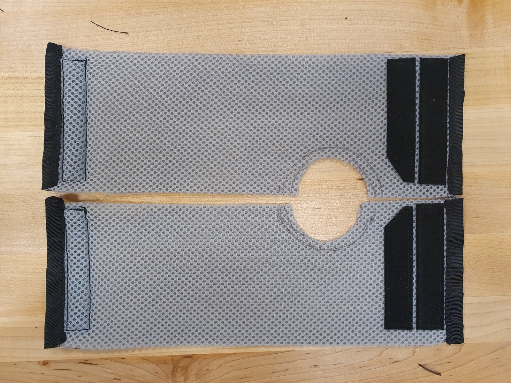
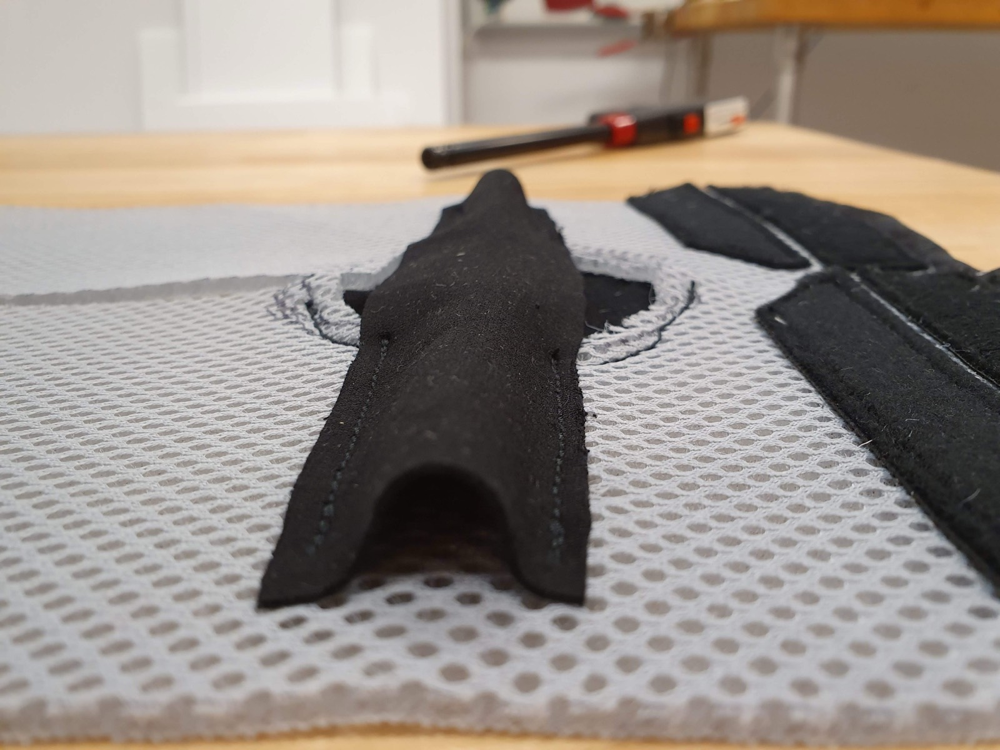
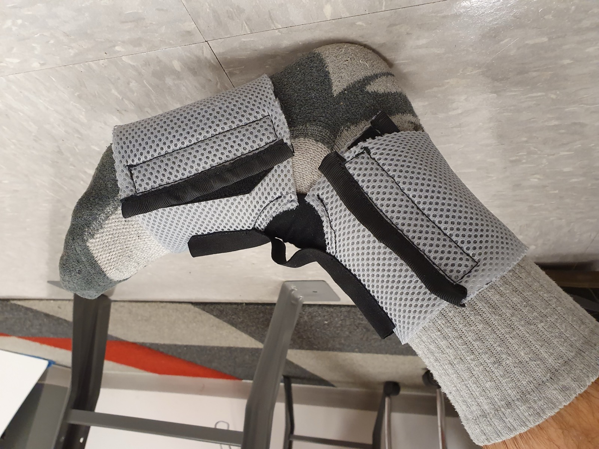
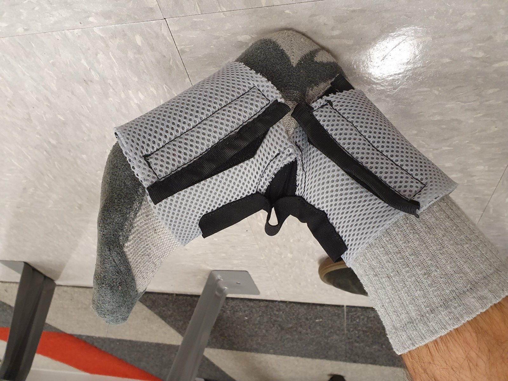
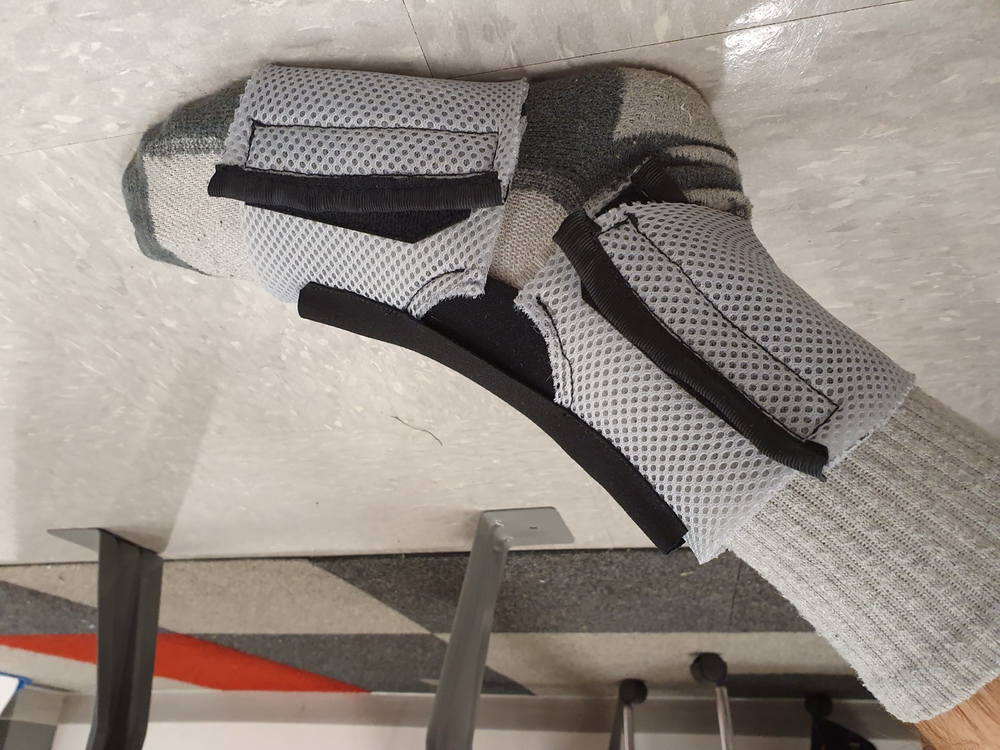